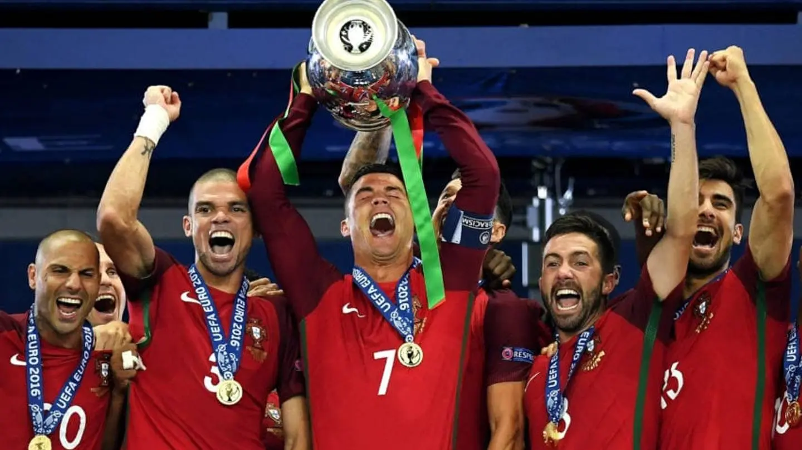
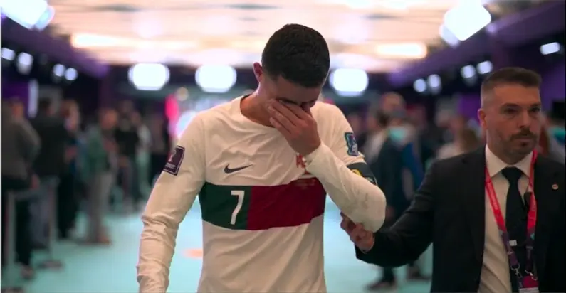

Portugal · Cristiano Ronaldo
The Last
Empty Room.
Căn phòng cuối cùng còn trống trong lâu đài của một người đã dành cả đời để chứng minh rằng không có giới hạn nào là tuyệt đối.

Trong Moby-Dick, con cá voi trắng không chỉ là một con mồi, mà là thứ ám ảnh âm thầm kéo một con người đi tới tận cùng của đời mình, không phải vì thiếu nó thì tất cả những gì ông từng sống đều trở nên vô nghĩa, mà vì càng không thể chạm tới nó, nó càng trở thành khoảng trống duy nhất khiến mọi điều còn lại cũng không đủ làm lòng ông yên ổn.
Với Cristiano Ronaldo, World Cup có lẽ cũng là một điều như vậy. Không phải vì anh cần nó để chứng minh mình vĩ đại, bởi sự nghiệp của Ronaldo từ lâu đã vượt qua cái điểm mà một danh hiệu đơn lẻ có thể quyết định anh là ai, nhưng trong một đời bóng đá gần như đã có tất cả, từ Champions League, Quả bóng vàng, Euro, Nations League, những kỷ lục ghi bàn tưởng như vô lý, cho tới những đêm mà cả thế giới chỉ cần thấy bóng tìm tới anh trong vòng cấm là đã biết một khoảnh khắc lớn sắp xảy ra, vẫn luôn có một khoảng trống nằm lặng lẽ ở đó, không ồn ào, không phủ nhận bất cứ điều gì anh từng làm, nhưng cũng chưa bao giờ thật sự biến mất.

World Cup.
Căn phòng cuối cùng còn trống trong lâu đài của một người đã dành cả đời để chứng minh rằng không có giới hạn nào là tuyệt đối. Có những tấm hình không cần một giọt nước mắt nào vẫn đủ làm người ta thấy buồn, và có lẽ tấm áo số 7 treo trong phòng thay đồ kia là một tấm hình như vậy. Cái tên Ronaldo nằm yên trên lưng áo, bên cạnh là biểu tượng World Cup 2026, mọi thứ nhìn qua tưởng như rất bình thường, chỉ là một chiếc áo trước giờ bóng lăn, chỉ là một góc nhỏ trong phòng thay đồ, chỉ là một nghi thức quen thuộc trước khi một cầu thủ bước ra sân, nhưng càng nhìn lâu lại càng thấy trong đó có một thứ gì đó rất nặng, như thể hơn hai mươi năm bóng đá, hơn hai mươi năm kiêu hãnh, ám ảnh, kỷ luật, nước mắt và những lần cả thế giới phải cúi đầu trước sự bền bỉ gần như phi lý của Cristiano Ronaldo, cuối cùng được thu lại trong một chiếc áo đang chờ chủ nhân của nó bước vào sân khấu World Cup lần cuối.
Ronaldo đã sống gần như cả đời mình trong trạng thái đuổi theo một điều gì đó. Đuổi theo một phiên bản tốt hơn của chính mình, đuổi theo những kỷ lục tưởng như được đặt ra để không ai chạm tới, đuổi theo những đêm lớn, những khoảnh khắc lớn, những trận đấu mà càng bị nghi ngờ anh càng có lý do để bước ra và biến sự nghi ngờ đó thành nhiên liệu. Có lẽ vì vậy mà người ta đôi khi quên mất anh cũng là một con người, bởi Ronaldo đã trở lại quá nhiều lần, đã ghi bàn trong quá nhiều thời điểm mà đáng lẽ một cầu thủ bình thường phải im lặng, đã tự kéo mình qua quá nhiều giới hạn tới mức thế giới bắt đầu tin rằng chỉ cần anh còn đứng đó, chỉ cần số 7 còn hiện diện trong vòng cấm, chỉ cần ánh mắt đó chưa chịu tắt, thì câu chuyện vẫn phải chừa lại cho anh một lối thoát.
Nhưng cuộc đời chưa bao giờ tử tế như vậy.
Nó không quan tâm anh đã sống kỷ luật ra sao, không quan tâm anh đã thắng bao nhiêu, không quan tâm anh đã kéo Bồ Đào Nha đi qua những cột mốc mà rất lâu trước đó cả một đất nước chỉ dám mơ, cũng không quan tâm rằng anh đã dành cả tuổi trẻ, cả đỉnh cao, rồi cả những năm tháng cuối cùng của sự nghiệp để quay lại với cùng một giấc mơ. Chiếc cúp vàng danh giá đó cứ ở đó, xa xỉ, im lặng, lạnh lùng, giống một cánh cửa chỉ mở ra vào đúng thời điểm cho một số rất ít người, và với Ronaldo, cánh cửa đó đã khép lại hết lần này tới lần khác, từ khi anh còn là một cậu trai trẻ đầy tốc độ, cho tới khi anh trở thành một người đàn ông bốn mươi mốt tuổi bước vào đường hầm với chiếc băng đội trưởng và số 7 sau lưng.

Nhưng thời gian là thứ không ai thắng mãi được. Có thể Ronaldo đã chống lại nó lâu hơn hầu hết mọi người, có thể anh đã ép cơ thể mình đi xa hơn giới hạn của một cầu thủ bình thường, có thể anh đã sống cả đời với niềm tin rằng chỉ cần đủ ám ảnh, đủ kỷ luật, đủ khát khao, mọi thứ đều có thể bị kéo về phía mình, nhưng ở cuối con đường World Cup, điều chờ anh không phải lúc nào cũng là phần thưởng cho những năm tháng đó, đôi khi chỉ là một cánh cửa đóng lại, rất nhẹ, rất lặng, nhưng đủ để người ta hiểu rằng có những giấc mơ dù được theo đuổi bằng cả một đời kiêu hãnh vẫn có thể rời khỏi tay mình mãi mãi.
Có lẽ điều đau nhất không phải là Ronaldo không có World Cup. Điều đau nhất là World Cup từng đi cùng anh qua quá nhiều phiên bản của chính anh, qua cậu trai trẻ ngạo nghễ, qua siêu sao ở đỉnh cao quyền lực, qua người đội trưởng đã có mọi thứ nhưng vẫn muốn thêm một điều cuối cùng cho đất nước mình, rồi sau cùng qua hình ảnh một người đàn ông đứng trước lần cuối, vẫn mặc chiếc áo đỏ đó, vẫn mang số 7 đó, vẫn bước vào sân như thể trong lòng chưa chịu buông, dù có lẽ ở đâu đó rất sâu, anh cũng hiểu rằng thời gian không còn đứng về phía mình nữa.
Ronaldo sẽ không rời bóng đá như một người chưa trọn vẹn, bởi sự nghiệp của anh quá lớn để bị thu nhỏ vào một chiếc cúp không có trong tủ danh hiệu. Nhưng trong câu chuyện gần như phi thường đó, vẫn sẽ luôn có một góc rất buồn dành cho World Cup, dành cho chiếc áo số 7 treo cạnh biểu tượng 2026, dành cho người đàn ông đã thắng gần như mọi thứ nhưng vẫn phải chấp nhận rằng điều mình muốn nhất trong màu áo đội tuyển có thể sẽ không bao giờ thuộc về mình.
The Last Empty Room.
Căn phòng cuối cùng còn trống trong lâu đài của một vị vua đã có gần như tất cả. Và có lẽ điều buồn nhất không phải là căn phòng đó trống, mà là việc lần đầu tiên sau rất nhiều năm, chúng ta nhìn thấy Ronaldo bước ngang qua nó lần cuối, biết rõ anh sẽ không còn có cơ hội để quay lại nữa.